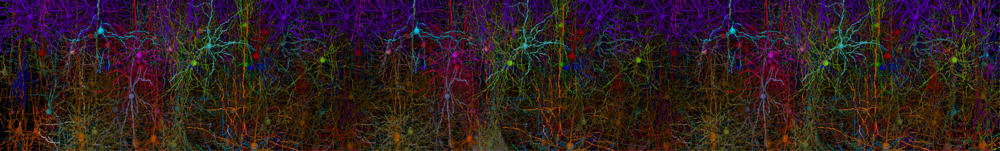
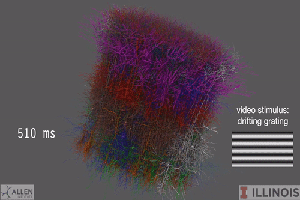

BMTK: The Brain Modeling Toolkit#

About BMTK#
The Brain Modeling Toolkit (BMTK) is a open-source software package for modeling and simulation of large-scale neural network models. It Supports a range of modeling levels of resolution: multi-compartment biophysically detailed, point-neuron, and population-level firing rate models.
BMTK supports the full workflow for developing biologically realistic models of the brain networks; from building network models from scratch, to running parallelized simulations, to doing perturbation analysis. It offers:
An interface (API) for building models and running simulations, unified across levels of resolution
A framework to easily share models and expand upon existing models
A simple network simulation setup with little-to-no programming necessary
Adaptability that allows more advanced users to completely change how networks are instantiated and simulated
Auotmatic parallelization
Support for simulations ranging from single cells to networks with millions of cells and billions of synapses
Functionality to programmatically adjust cell and synaptic properties on-the-fly during simulations
A suite of functions for analyzing and visualizing network structure and simulations results
And much more!

BMTK Workflow
BMTK separates the process of building, simulating, and analyzing the results, thanks to modular organization and the data format it uses (SONATA, see below). BMTK constructs a fully instantiated model and saves it in SONATA files. Subsequently, running a simulation involves loading SONATA files, without the need to re-build the model.
On the other hand, users can easily adjust cell and synaptic parameters in SONATA files, enabling faster iterations of simulations. Models in SONATA format can be constructed, simulated, or analyzed using not only BMTK, but also a variety of other tools that support this format.
BMTK consists of three major components: the network builder, the simulation engines, and the analysis and visualization tools. The components can be used in one workflow or separately.
Further Resources#
For detailed information about using BMTK and all the available features please see our User Guide page.
For a list of workable tutorials and example networks please see our Tutorials and Examples page.
For examples of how we use BMTK and related tools to build realistic models at the Allen Institute, please see our Computational Modeling & Theory page at the Allen Brain Map Portal.
If you have questions, issues, or requests for BMTK developers and/or the scientists that use the tool in their own modeling work, please feel free to reach out to us directly. Our Contact Us page contains a number of ways to reach out to our team at the Allen Institute.
Acknowledgements#
How to cite BMTK and related tools.
See our Contributors Page for a list of the people who have helped with the development and growth of BMTK.
We wish to thank the Allen Institute founder, Paul G. Allen, for his vision, encouragement, and support.